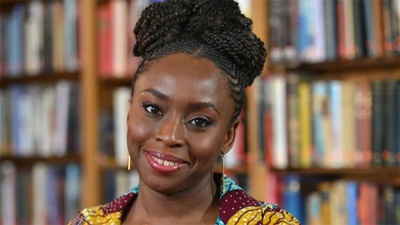

Uma história única,
- Chimamanda Adichie. De seu discurso mais famoso, a um livro
 Ela fala que: Vivemos numa sociedade onde é normal ouvirmos histórias únicas sobre um indivíduo ou sobre um grupo de pessoas que, à força de serem repetidas, acabam por parecer definitivas. Vivemos num mundo onde a história única tem servido para descredibilizar “minorias” em detrimento de um só povo. As histórias são importantes, mas devemos ouvir muito mais histórias de modo a encontrar um equilíbrio de narrativas, experiências e realidades diversas.
Durante muitos anos, ouvimos histórias sobre o continente africano - das suas guerras, catástrofes, doenças e fomes - que se tornaram a única verdade sobre África. É importante sabermos que cada história tem dois lados, e nunca podemos ouvir apenas uma das versões.
Segundo a escritora Chimamanda, em O perigo da história única, cria-se uma única história, quando mostramos um povo como se fosse somente uma coisa, um objeto do discurso dos outros. Para a escritora, é impossível falar da história única sem se falar de poder, uma vez que quem conta a história única é quem detém poder, seja ele económico, político ou epistémico. O poder, para além de ter a capacidade de contar a história de outra pessoa, consegue fazer com que esta história seja definitiva.